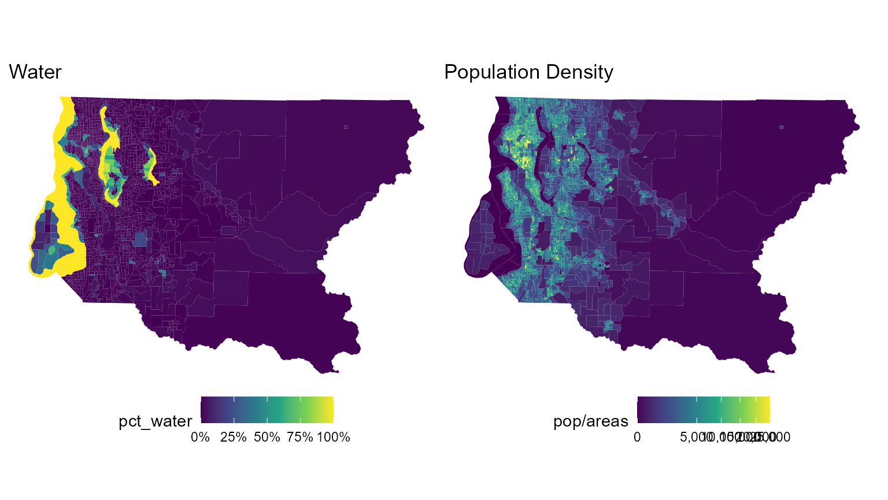
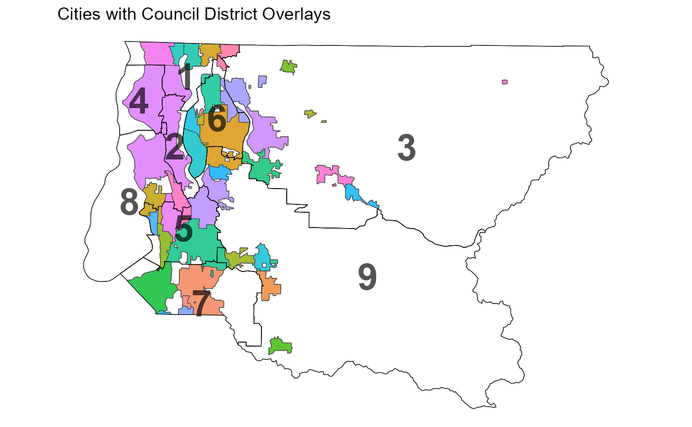
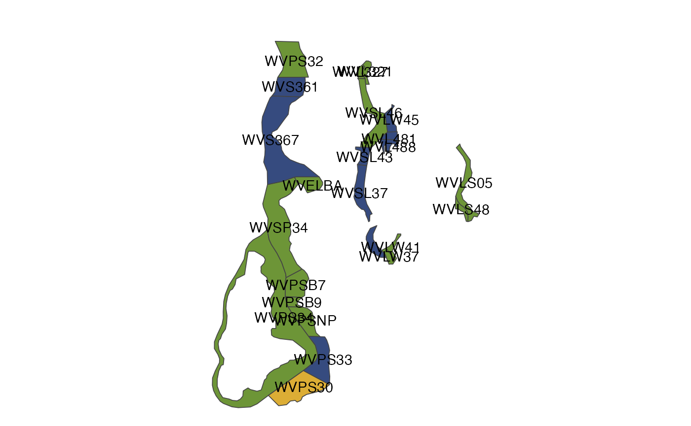
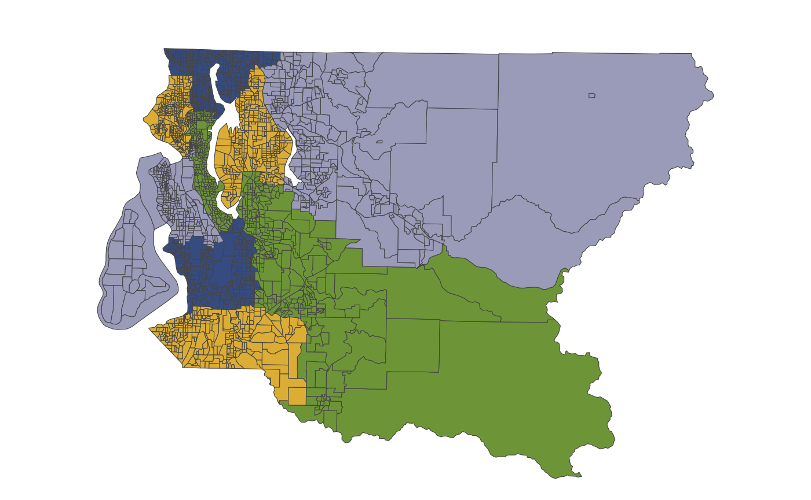
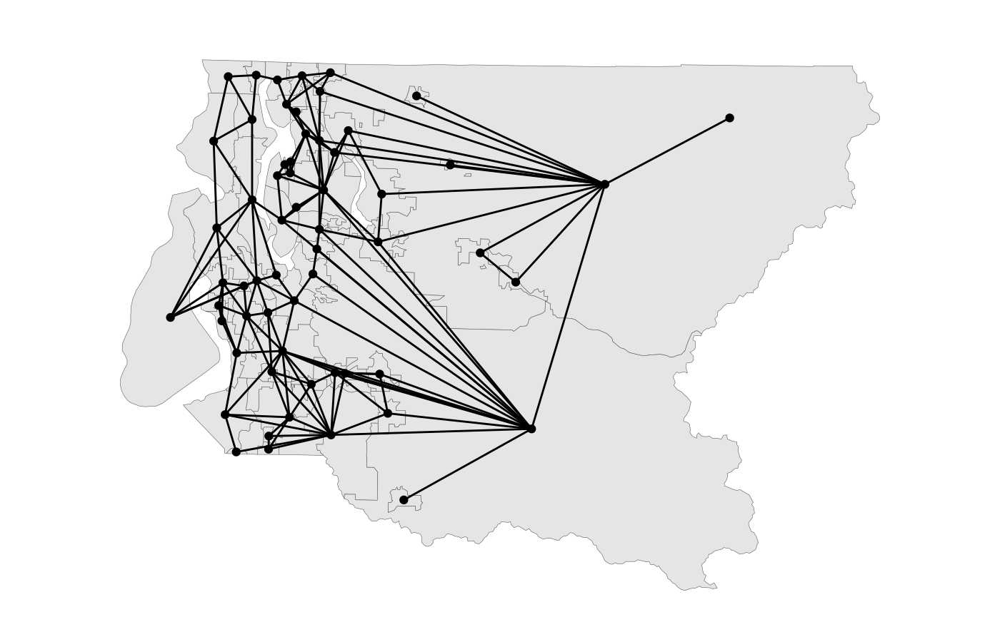
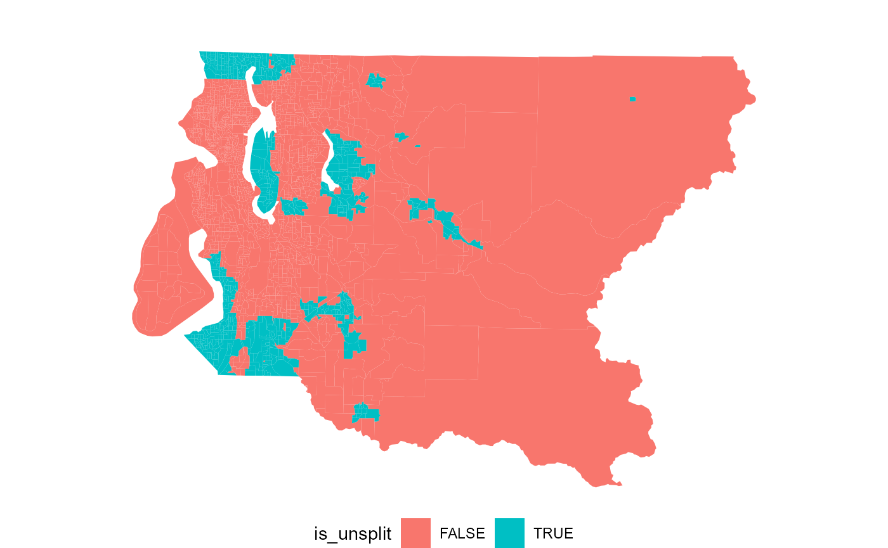
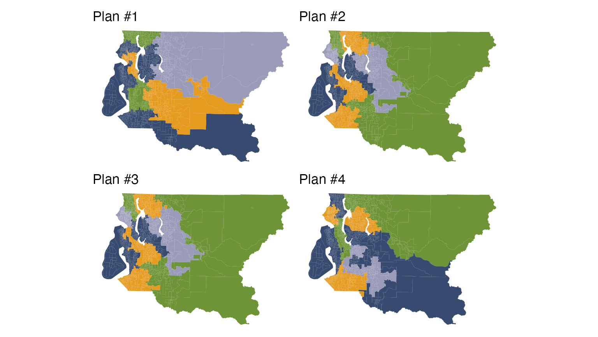
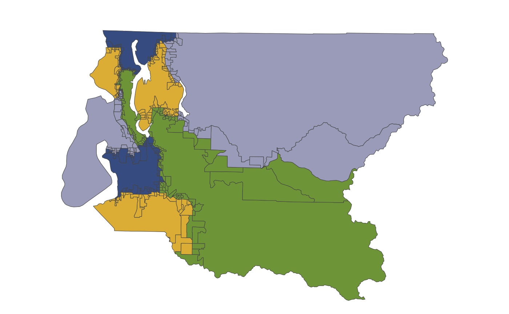
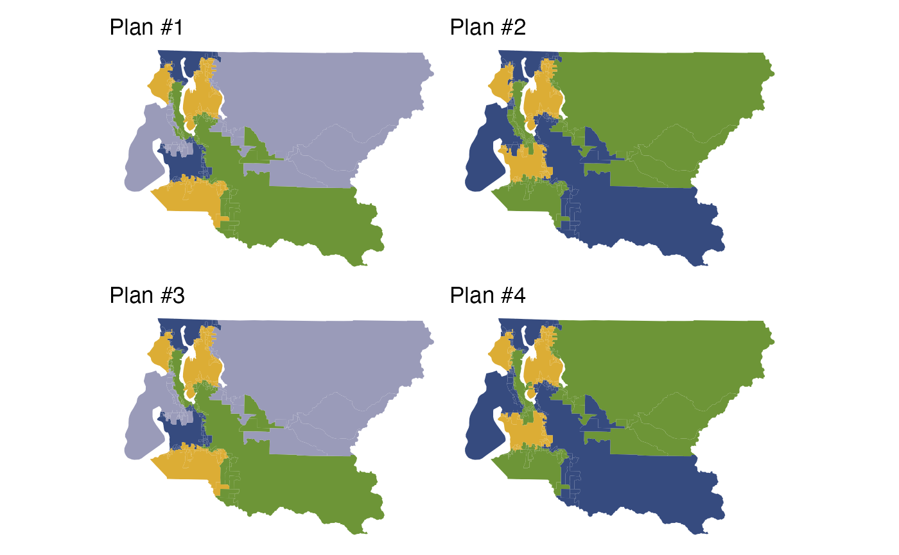

In redistricting analysis, it is often useful or necessary to analyze only a portion of a map, or hold some districts fixed while others are re-simulated. Other analyses might require a status-quo-type constraint that encourages simulated districts to be close to a reference plan.
All of these requirements may be achieved through map pre-processing, and this vignette shows how to use redist to do so, using the Metropolitan King County Council districts as an example.
King County is the most populous county in the state of Washington, and contains the city of Seattle. The nine members of the county council are elected from single-member districts which are redrawn every decade. According to the county charter, the districts should be “drawn to produce districts with compact and contiguous territory, composed of economic and geographic units and approximately equal in population,” and should follow municipality lines as much as possible.
The precinct data are available online, and contain population, presidential vote, city, and existing district information.
library(dplyr)
library(ggplot2)
library(scales)
library(patchwork)
library(redist)
data_url = "https://github.com/alarm-redist/redist-data/raw/main/data/king_county.rds"
data_path = tempfile()
download.file(data_url, data_path)
king_shp = readRDS(data_path)
print(king_shp)
#> Simple feature collection with 2562 features and 10 fields
#> Attribute-geometry relationship: 3 constant, 5 aggregate, 2 identity
#> Geometry type: MULTIPOLYGON
#> Dimension: XY
#> Bounding box: xmin: 1217170 ymin: 31464.84 xmax: 1583214 ymax: 287944.6
#> Projected CRS: NAD83(HARN) / Washington North (ftUS)
#> # A tibble: 2,562 x 11
#> id precinct city distr pop vap voters dem_08 rep_08 pct_water
#> * <chr> <chr> <chr> <int> <int> <int> <dbl> <dbl> <dbl> <dbl>
#> 1 333518 AUB 30-3518 AUB 7 1035 780 641 249 221 0
#> 2 331066 AUB 30-1066 AUB 7 588 466 372 172 123 0
#> 3 332446 PEGGY UNINCORP 7 1290 950 763 339 262 0
#> 4 332573 AUB 30-2573 AUB 7 948 710 644 305 217 0
#> 5 333539 AUB 30-3539 AUB 7 663 486 419 188 156 0
#> 6 333538 AUB 30-3538 AUB 7 1214 892 716 328 240 0
#> 7 330045 AUB 47-0045 AUB 7 731 656 433 190 105 0.00538
#> 8 330427 EXCALIBUR UNINCORP 7 660 501 402 164 151 0.00689
#> 9 333087 FED 30-3087 FED 7 820 645 453 223 124 0
#> 10 333238 FED 30-3238 FED 7 997 674 356 161 90 0
#> # ... with 2,552 more rows, and 1 more variable:
#> # geometry <MULTIPOLYGON [US_survey_foot]>There are 39 incorporated cities in King County, which together cover 19% of the population and 19% of the area of the county. The remainder is “unincorporated King County”. The county contains a significant amount of water, too, which complicates the drawing of districts; Vashon Island in the southwest part of the county is not connected to the rest of the county by land.
We’ll start by looking at some maps of the county and the districts.


redist_map objectThe first step one in a redist analysis is creating the redist_map object, which stores the basic parameters of the redistricting problem. Among these parameters is the desired level of population parity. Here, we’ll compute the parity of the current set of districts, and ensure that all of our simulations do no worse.
existing_parity = redist.parity(king_shp$distr, king_shp$pop)
king = redist_map(king_shp, existing_plan=distr, pop_tol=existing_parity)
print(king)
#> A redist_map object with 2562 units and 12 fields
#> To be partitioned into 9 districts with population between 214,505.7 - 1.663204% and 214,505.7 + 1.663204%
#> With geometry:
#> bbox: xmin: 1217170 ymin: 31464.84 xmax: 1583214 ymax: 287944.6
#> projected CRS: NAD83(HARN) / Washington North (ftUS)
#> # A tibble: 2,562 x 12
#> id precinct city distr pop vap voters dem_08 rep_08 pct_water
#> * <chr> <chr> <chr> <int> <int> <int> <dbl> <dbl> <dbl> <dbl>
#> 1 333518 AUB 30-3518 AUB 7 1035 780 641 249 221 0
#> 2 331066 AUB 30-1066 AUB 7 588 466 372 172 123 0
#> 3 332446 PEGGY UNINCORP 7 1290 950 763 339 262 0
#> 4 332573 AUB 30-2573 AUB 7 948 710 644 305 217 0
#> 5 333539 AUB 30-3539 AUB 7 663 486 419 188 156 0
#> 6 333538 AUB 30-3538 AUB 7 1214 892 716 328 240 0
#> 7 330045 AUB 47-0045 AUB 7 731 656 433 190 105 0.00538
#> 8 330427 EXCALIBUR UNINCORP 7 660 501 402 164 151 0.00689
#> 9 333087 FED 30-3087 FED 7 820 645 453 223 124 0
#> 10 333238 FED 30-3238 FED 7 997 674 356 161 90 0
#> # ... with 2,552 more rows, and 2 more variables:
#> # geometry <MULTIPOLYGON [US_survey_foot]>, adj <list>This redist_map object contains an adjacency graph for the county. We can explore this graph, and zoom in on the city of Seattle, using plot().
plot(king, adj=T, centroids=F, zoom_to=(city == "SEA"))Often, we wish to restrict our analysis to a part of a map or only a few of the districts. This is supported in redist using the filter() function from dplyr. The package’s version of filter() will automatically update the adjacency graph, the number of districts, and the relevant population bounds.
Suppose we wanted to study districts 2, 4, and 8, which cover most of Seattle.
filter(king, distr %in% c(2, 4, 8))
#> A redist_map object with 960 units and 12 fields
#> To be partitioned into 3 districts with population between 213,049 - 0.9908519% and 213,049 + 2.358299%
#> With geometry:
#> bbox: xmin: 1217170 ymin: 120178.2 xmax: 1297890 ymax: 271519.8
#> projected CRS: NAD83(HARN) / Washington North (ftUS)
#> # A tibble: 960 x 12
#> id precinct city distr pop vap voters dem_08 rep_08 pct_water
#> * <chr> <chr> <chr> <int> <int> <int> <dbl> <dbl> <dbl> <dbl>
#> 1 330374 DOLPHIN UNINCORP 8 378 296 291 199 53 0.447
#> 2 330236 BILOXI UNINCORP 8 534 436 432 295 81 0.394
#> 3 330370 DILWORTH UNINCORP 8 536 424 420 299 66 0.293
#> 4 331520 SEA 34-1520 SEA 8 407 316 312 237 49 0.398
#> 5 333266 SEA 34-3266 SEA 8 601 495 246 160 31 0
#> 6 333265 SEA 34-3265 SEA 8 741 561 315 231 38 0
#> 7 331515 SEA 34-1515 SEA 8 524 418 353 276 34 0
#> 8 331512 SEA 34-1512 SEA 8 379 307 262 200 33 0
#> 9 331517 SEA 34-1517 SEA 8 353 295 239 193 17 0
#> 10 331519 SEA 34-1519 SEA 8 407 328 282 211 44 0
#> # ... with 950 more rows, and 2 more variables:
#> # geometry <MULTIPOLYGON [US_survey_foot]>, adj <list>Looking at the information in the header, and comparing it to the original king object, we see that the number of districts has been updated from 9 to 3, and the population tolerances have been updated from 214,506 ± 1.663% to 213,049 - 0.9909% and 213,049 + 2.358%. Not visible but equally important are the edits to the adjacency graph to reflect the new geometry of the map.
Another way we might want to subset would be to cut out the precincts which are just water, so that districts won’t unnecessarily cross bodies of water. Of course, we’ll have to ensure that Vashon Island is still connected to the mainland by at least one precinct. We’ll start by subsetting to the water precincts and plotting labels.
plot(filter(king, pct_water >= 0.99, pop == 0)) + geom_sf_text(aes(label=id))
#> Warning in dplyr_row_slice.redist_map(.data, loc, preserve = .preserve): Your subset was not based on districts. Please use `set_pop_tol(map)`
#> to update your `redist_map` object or create a new `redist_map`
#> object with the correct number of districts.
#> A
#> B
#> 1
#> 2
#> 3
#> 4
#> 5
#> 6
#> 7
#> 8
We see that by removing all water precincts except WVPS34 and WVSP34, we can maintain a connection between the island and the mainland (incidentally, the state ferry connecting the island to Seattle runs through these precincts).
water_prec = filter(king, pct_water >= 0.99, pop == 0) %>% pull(id)
#> Warning in dplyr_row_slice.redist_map(.data, loc, preserve = .preserve): Your subset was not based on districts. Please use `set_pop_tol(map)`
#> to update your `redist_map` object or create a new `redist_map`
#> object with the correct number of districts.
water_prec = setdiff(water_prec, c("WVPS34", "WVSP34"))
king_land = filter(king, !(id %in% water_prec))
plot(king_land)
#> A
#> B
#> 1
#> 2
#> 3
#> 4
#> 5
#> 6
#> 7
#> 8
Zooming in again to view the adjacency graph in the city of Seattle, we see that the graph has been appropriately edited to remove the water precincts.
plot(king_land, adj=T, centroids=F, zoom_to=(city == "SEA"))Often, we want to merge some units together to form larger units, either to visualize or analyze at a coarser scale, or to ensure that the merged units are treated as one “block” in any redistricting algorithm. Merging units is a part of most map preprocessing workflows, and in redist is carried out by the merge_by() function, which works like a combination of the group_by() and summarize() verbs of dplyr.
For example, we could merge our King County data by city.
merge_by(king_land, city)
#> A redist_map object with 60 units and 11 fields
#> To be partitioned into 9 districts with population between 214,505.7 - 1.663204% and 214,505.7 + 1.663204%
#> Merged from another map with reindexing: int [1:2541] 41 41 46 41 41 ...
#> # A tibble: 60 x 11
#> distr city pct_water pop vap voters dem_08 rep_08 id precinct adj
#> <int> <chr> <dbl> <int> <int> <dbl> <dbl> <dbl> <chr> <chr> <lis>
#> 1 1 BOT 0 17090 13312 9.89e3 5259 3017 3332~ BOT 01-~ <int~
#> 2 1 KIR 0.0503 7036 5856 3.91e3 2191 947 3329~ KIR 45-~ <int~
#> 3 1 KMR 0.0128 20460 15787 1.30e4 7288 3476 3306~ KMR 32-~ <int~
#> 4 1 LFP 0.0281 12598 9975 9.46e3 6063 1992 3306~ LFP 32-~ <int~
#> 5 1 SEA 0.00845 72503 59161 4.79e4 34664 6527 3323~ SEA 46-~ <int~
#> 6 1 SHL 0.00447 53007 42873 3.43e4 20895 7184 3325~ SHL 32-~ <int~
#> 7 1 UNIN~ 0.0536 24780 19208 1.54e4 8370 4440 3305~ JEAN~CE~ <int~
#> 8 1 WOD 0.00260 8059 6163 4.79e3 2480 1505 3327~ WOD 45-~ <int~
#> 9 2 SEA 0.0408 195293 162191 1.17e5 84203 10899 3318~ SEA 43-~ <int~
#> 10 2 UNIN~ 0.0248 15645 11866 7.46e3 4654. 1211. 3309~ RAINIER~ <int~
#> # ... with 50 more rowsUnder the hood, merge_by() does several things. First, it groups the shapefile by the provided key or keys (here, city). By default it also groups by existing districts, so that the merged units will still follow district boundaries. Then for each remaining column, merge_by() tries to automatically summarize it. Most numeric columns are summed (but columns with percentage values are averaged), and most character columns are collapsed into summary variables. You can read more about the details of this process in the documentation. Finally, merge_by() makes the appropriate edits to the adjacency graph.
Merging geographic shapefile units can be computationally intensive, and so by default merge_by() drops the geometry before merging. This is OK for analysis purposes, since all of the relevant adjacency information is still encoded in the graph. After analysis, you can use the pullback() method to un-merge objects and restore plotting capability. However, should you want to preserve the geometry through merging, you can simply set drop_geom=FALSE.

We will see more uses of merge_by() in the sections below.
Sometimes, rather than completely remove a portion of a map, we want to freeze it in place, so that all of the units in that portion stay together in the same district. The reasons for doing this might vary, but include enforcing a county or administrative boundary split constraint, aiding in setting up Voting Rights Act constraints, or preparing a map to be optimized according to a set of criteria.
In the context of King County Council seats, we might want to implement the requirement that districts follow municipal lines by ensuring that any sampled redistricting plans not split any municipalities which are not split by the existing plan. That way, the number of split municipalities in the set of sampled plans will be guaranteed to not exceed the number of existing splits.
In redist, freezing is accomplished by using the freeze() and merge_by() functions. The former takes in a description of the units which should be frozen, and groups them into contiguous chunks of frozen units, returning an indexing vector that uniquely identifies each group. Then merge_by() merges these groups together. We can use the redist.splits() function to count split municipalities, and the is_county_split() function to identify split municipalities.
cat(redist.splits(king_land$distr, king_land$city), "split cities\n")
#> 9 split cities
king_land %>%
mutate(is_unsplit = !is_county_split(distr, city)) %>%
plot(is_unsplit)
king_unsplit = king_land %>%
mutate(unsplit_id = freeze(!is_county_split(distr, city))) %>%
merge_by(unsplit_id, city, collapse_chr=FALSE)
print(king_unsplit)
#> A redist_map object with 1968 units and 10 fields
#> To be partitioned into 9 districts with population between 214,505.7 - 1.663204% and 214,505.7 + 1.663204%
#> Merged from another map with reindexing: int [1:2541] 1410 1410 1414 1410 1410 ...
#> # A tibble: 1,968 x 10
#> distr unsplit_id city pct_water pop vap voters dem_08 rep_08 adj
#> <int> <int> <chr> <dbl> <int> <int> <dbl> <dbl> <dbl> <list>
#> 1 1 67 SEA 0 1227 1115 601 420 83 <int [7]>
#> 2 1 68 SEA 0 663 533 467 359 46 <int [6]>
#> 3 1 69 SEA 0 563 455 376 286 47 <int [5]>
#> 4 1 70 SEA 0 369 298 248 190 28 <int [5]>
#> 5 1 71 SEA 0 423 360 296 233 27 <int [5]>
#> 6 1 72 SEA 0 580 488 406 310 47 <int [6]>
#> 7 1 101 BOT 0 17090 13312 9894 5259 3017 <int [13]>
#> 8 1 101 KMR 0.0128 20460 15787 12954 7288 3476 <int [10]>
#> 9 1 101 LFP 0.0281 12598 9975 9465 6063 1992 <int [4]>
#> 10 1 101 SHL 0.00447 53007 42873 34346 20895 7184 <int [14]>
#> # ... with 1,958 more rowsThe plot above shows which cities will be frozen together so that they cannot be split. Notice that we merge by not just unsplit_id but also city, so that adjacent unsplit cities are not merged together. We also set collapse_chr=FALSE to drop the id and precinct columns, which become slightly unwieldy after a large merge.
To see this in action, we’ll sample 50 redistricting plans using redist_smc() on this partially frozen map. We’ll use pullback() to then reconstruct the plan output of redist_smc() so that it is congruous with the original geometry object, king_land.
plans = redist_smc(king_unsplit, 50, silent=T)
print(plans)
#> 50 sampled plans and 1 reference plan with 9 districts from a 1968-unit map,
#> drawn using Sequential Monte Carlo
#> Merged from another map with reindexing: int [1:2541] 1410 1410 1414 1410 1410 ...
#> With plans resampled from weights
#> Plans matrix: num [1:1968, 1:51] 1 1 1 1 1 1 1 1 1 1 ...
#> # A tibble: 459 x 3
#> draw district total_pop
#> <fct> <int> <dbl>
#> 1 distr 1 215533
#> 2 distr 2 210938
#> 3 distr 3 213700
#> 4 distr 4 215718
#> 5 distr 5 216833
#> 6 distr 6 213696
#> 7 distr 7 214210
#> 8 distr 8 212491
#> 9 distr 9 217432
#> 10 1 1 217634
#> # ... with 449 more rows
print(pullback(plans))
#> 50 sampled plans and 1 reference plan with 9 districts from a 2541-unit map,
#> drawn using Sequential Monte Carlo
#> With plans resampled from weights
#> Plans matrix: num [1:2541, 1:51] 7 7 7 7 7 7 7 7 7 7 ...
#> # A tibble: 459 x 3
#> draw district total_pop
#> <fct> <int> <dbl>
#> 1 distr 1 215533
#> 2 distr 2 210938
#> 3 distr 3 213700
#> 4 distr 4 215718
#> 5 distr 5 216833
#> 6 distr 6 213696
#> 7 distr 7 214210
#> 8 distr 8 212491
#> 9 distr 9 217432
#> 10 1 1 217634
#> # ... with 449 more rows
redist.plot.plans(pullback(plans), draws=1:4, geom=king_land)
#> A
#> B
#> 1
#> 2
#> 3
#> 4
#> 5
#> 6
#> 7
#> 8
#> A
#> B
#> 1
#> 2
#> 3
#> 4
#> 5
#> 6
#> 7
#> 8
#> A
#> B
#> 1
#> 2
#> 3
#> 4
#> 5
#> 6
#> 7
#> 8
#> A
#> B
#> 1
#> 2
#> 3
#> 4
#> 5
#> 6
#> 7
#> 8
Notice how the Merged from another map... line disappears and the number of map units changes after using pullback(). Notice also that each of the sampled plans completely preserves the municipalities which were frozen with freeze() and merge_by().
A common requirement in redistricting is that districts after redistricting resemble the original districts, or “preserve the cores” of previous districts, to ensure relative continuity of representation. The redist package operationalizes this idea by explicitly constructing the cores of a set of districts with make_cores(), and merging them together with merge_by().
The idea for constructing district cores is to work inwards from district boundaries. First, we merge each district completely. Then, we un-freeze the precincts which lie along district boundaries. Then, we un-freeze the precincts which were unfrozen in the previous step. We repeat this process a user-specified number of times, leaving only the central “cores” of each district frozen. When it comes time to simulate, these cores will be assigned a district as a unit, preserving representation for all the people living in the core.
The make_cores() function takes a boundary parameter which counts the number of these steps; boundary=1 corresponds to un-freezing the precincts along the boundary only. This is often sufficient for a moderate-to-strong status quo constraint.
For example, if we set boundary=1 in King county, 82% of the population lives inside a district core, while with boundary=2 that number drops to 58%.
pop_inside_cores = function(boundary) {
king_land %>%
mutate(core = make_cores(boundary=boundary)) %>%
group_by(core) %>%
filter(n() > 2) %>% # filter to cores only
pull(pop) %>% sum
}
pop_inside_cores(1) / sum(king_land$pop)
#> Warning in dplyr_row_slice.redist_map(.data, loc, preserve = .preserve): Your subset was not based on districts. Please use `set_pop_tol(map)`
#> to update your `redist_map` object or create a new `redist_map`
#> object with the correct number of districts.
#> [1] 0.8254058
pop_inside_cores(2) / sum(king_land$pop)
#> Warning in dplyr_row_slice.redist_map(.data, loc, preserve = .preserve): Your subset was not based on districts. Please use `set_pop_tol(map)`
#> to update your `redist_map` object or create a new `redist_map`
#> object with the correct number of districts.
#> [1] 0.5909499Here, we’ll use boundary=1. We can see how large areas inside each district are merged together after applying merge_by() to the generated cores.
king_cores = king_land %>%
mutate(core = make_cores(boundary=1)) %>%
merge_by(core, drop_geom=F)
plot(king_cores)
#> A
#> B
#> 1
#> 2
#> 3
#> 4
#> 5
#> 6
#> 7
#> 8
If we sample redistrict plans from this modified map, we observe that the simulated plans generally follow the same location and shape as the original plan. Sampling is also faster, since there are fewer units in the map.
plans = redist_smc(king_cores, 50, silent=T)
redist.plot.plans(plans, draws=1:4, geom=king_cores)
#> A
#> B
#> 1
#> 2
#> 3
#> 4
#> 5
#> 6
#> 7
#> 8
#> A
#> B
#> 1
#> 2
#> 3
#> 4
#> 5
#> 6
#> 7
#> 8
#> A
#> B
#> 1
#> 2
#> 3
#> 4
#> 5
#> 6
#> 7
#> 8
#> A
#> B
#> 1
#> 2
#> 3
#> 4
#> 5
#> 6
#> 7
#> 8